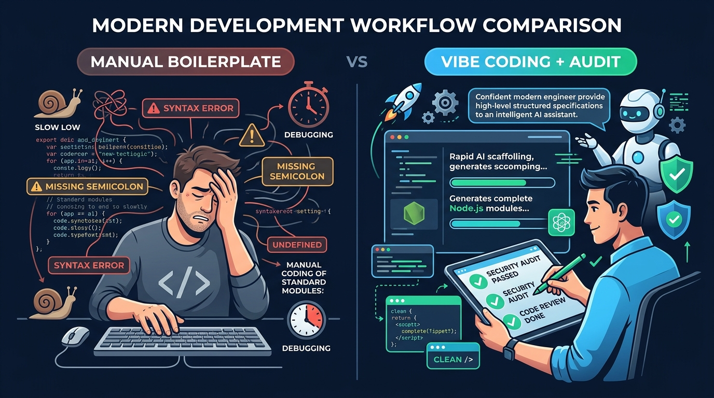

Aula 03: Padrões de Arquitetura Back-end (MVC/Controllers) e Scaffolding com Vibe Coding

1. Objetivos de Aprendizagem
Ao concluir este encontro síncrono, você será capaz de:2. Fundamentação Teórica (Markdown)
2.1 O Padrão MVC e Arquitetura em Camadas para APIs REST
No desenvolvimento tradicional com renderização no servidor, o padrão MVC (Model-View-Controller) dividia a aplicação em Dados (Model), Tela HTML (View) e Controle (Controller). Em arquiteturas modernas onde a View é um front-end desacoplado em React ou JavaScript Vanilla, adaptamos o MVC no Node.js para três camadas essenciais:req e res, extrai parâmetros, aciona o Service e devolve o status HTTP adequado.2.2 Scaffolding Acelerado com Vibe Coding
Quando pedimos a uma IA apenas "crie uma API de alunos", ela tende a gerar um único arquivo gigante difícil de manter. No Vibe Coding orientado a especificação, instruímos explicitamente a arquitetura em camadas desejada.3. Atividade Prática Guiada (Hands-on)
Passo 1: Prompt de Scaffolding em Camadas
TEXT[SPEC-PROMPT]: Gere um Service (AlunoService) e um Controller (AlunoController) em JavaScript ES6+ para Node.js seguindo o princípio da responsabilidade única. O AlunoService deve validar matrícula de 10 dígitos e nome mínimo de 3 letras, impedindo duplicidades. O AlunoController deve apenas traduzir chamadas HTTP em invocações ao Service.
Passo 2: Implementação Desacoplada (Service + Controller)
JAVASCRIPT// src/services/AlunoService.js export class AlunoService { constructor() { this.repositorio = new Map(); } criar({ nome, matricula, curso = 'Técnico em Informática para Internet' }) { if (!nome || typeof nome !== 'string' || nome.trim().length < 3) { const err = new Error('O nome completo do discente deve ter pelo menos 3 caracteres.'); err.statusCode = 422; throw err; } if (!/^\d{10}$/.test(String(matricula ?? ''))) { const err = new Error('A matrícula deve conter exatamente 10 dígitos numéricos.'); err.statusCode = 422; throw err; } if (this.repositorio.has(matricula)) { const err = new Error('Matrícula já cadastrada no sistema acadêmico.'); err.statusCode = 400; throw err; } const novoAluno = { id: this.repositorio.size + 1, nome: nome.trim(), matricula: String(matricula), curso, criadoEm: new Date().toISOString() }; this.repositorio.set(matricula, novoAluno); return novoAluno; } listarTodos() { return Array.from(this.repositorio.values()); } }
Passo 3: Teste de Validação
InstancieAlunoService em um teste isolado sem precisar subir a porta de rede HTTP, comprovando a vantagem do desacoplamento arquitetural.